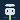
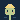
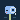
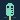
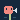
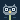

One family. Every seat stands on the Pricke's stake, in the Watt's green, at the same place and in the same water, on the site's night ground: a head, two eyes, a blush, and the one thing its job holds. The shape carries the seat; the colour, from the site's palette, is never the only carrier. A 20-unit grid — at 20 px a unit is a pixel — and nothing but the stake's foot and the water leaves the safe circle, 10 % inside the circle a crop cuts.






the seven at 20 px, in a row: on the night, on the paper, and without colour
| on the night · 200 px and 20 px | on the paper · 200 px and 20 px | the seat, its character |
|---|---|---|
principal the skipperplans and adjudicates A captain's cap with a gold badge, a level gaze: it plans the passage; the course is the Owner's. | ||
implementer the builderbuilds A yellow hard hat on a head of the stake's own green: it builds what the plan says, and is made of what it builds. | ||
reviewer the inspectorattacks and verifies A monocle over one wide eye, the other squinting: it attacks the tip it is handed and believes only what survives. | ||
research the tide gaugechecks and measures A graduated staff with wide-open eyes, the stake that measures: it checks and measures, and reads the marks, not the mood. | ||
go-to-market the heraldpitches and screens claims A horn, and eyes open on the stranger it speaks to: it announces only what passed its screen. | ||
designer the painterdraws A coral beret tilted on a pear of a head, eyes on its drawing: it draws the chart, the marks, and these seven. | ||
auditor the owlseals its plan and checks Spectacles, ear tufts, wide awake: it seals its plan before it looks, then checks in the dark what the others missed. |